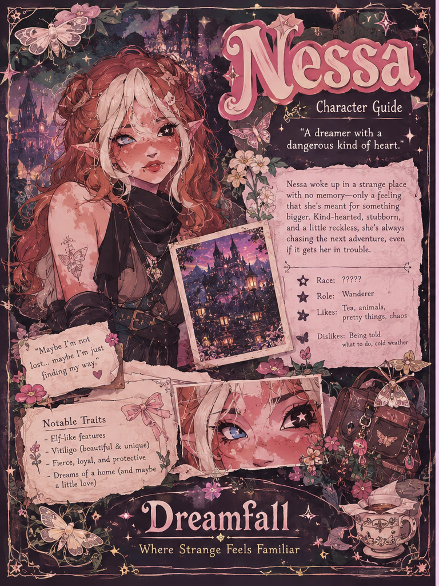

Nessa
A dreamer with a dangerous kind of heart.

Race: Unknown
Role: Tutorial Guide
Likes: Mylo (sometimes) | Helping Wanderers.
Dislikes: People who hate the word moist.
Her Story
Born After the War
Nessa was born after the war, into a world that had already been forever changed by it.
She never knew the land as it had been before the fighting. She never saw the cities before they became ruins, never walked through forests untouched by magic, and never witnessed the people who once filled the roads and settlements that now sit abandoned.
To Nessa, the remnants of the old world are simply the way things are.
But she has always been fascinated by what came before.
Mylo's Stories
Mylo, her strange and talkative feline companion, has been Nessa's only family for as long as she can remember.
Unlike Nessa, Mylo remembers the world before the war.
Throughout her childhood, Mylo told Nessa stories about the world he once knew. He described enormous cities filled with people, bustling markets, festivals, strange inventions, beautiful buildings, and forests that were once peaceful rather than dangerous.
Some of his stories were simple and ordinary. He would tell her about food he used to eat, places he visited, or people he once knew.
To Nessa, even these ordinary memories sounded magical.
But Mylo also remembers the war.
Those stories are different.
Mylo remembers the fear, destruction, and suffering that came with it. There are stories he refuses to tell Nessa, no matter how many times she asks.
Sometimes, she'll notice him grow quiet halfway through a story before he quickly changes the subject.
The Day They Met
Nessa's earliest memories are not of her parents.
They are of the forest.
When Nessa was very young, her parents abandoned her deep within the woods.
She was left far enough from civilization that finding her way home would have been nearly impossible.
Nessa doesn't remember why they left her.
She only remembers being alone.
She cried until her throat hurt, with nobody there to comfort her.
Then she heard something moving through the leaves.
Mylo had been wandering through the forest when he heard her crying. At first, he assumed the sound belonged to an injured animal.
Instead, he discovered a small child sitting alone beneath the trees.
Mylo approached cautiously.
Nessa was frightened at first.
Then Mylo climbed into her lap.
He curled himself against her and began to purr.
For the first time since she had been abandoned, Nessa stopped crying.
Mylo stayed.
He found food for her. He kept her warm at night. He carried her when she was too tired to walk.
Most importantly, he talked to her.
Eventually, Nessa stopped asking when her parents were coming back.
Mylo never became a replacement for them in her mind.
He simply became something else.
He became her family.
Growing Up With Mylo
As Nessa grew older, Mylo taught her everything he could.
He taught her how to recognize danger in the wilderness, which plants were safe to eat, how to find shelter, how to navigate the forest, and how to recognize places touched by lingering magic.
But Mylo also became Nessa's teacher of history.
She would sit beside him for hours, listening to stories about the world that existed before she was born.
"What did the world look like before the war?"
"Were there really that many people?"
"What was it like before everything became dangerous?"
"Did you know any heroes?"
"What happened to them?"
Mylo would usually laugh and tell her that the truth was much less exciting than the stories made it sound.
Nessa never believed him.
To her, the past became almost mythical.
Nessa's Curiosity
Nessa has always wished she could have witnessed the old world for herself.
She imagines what it would have been like to walk through bustling towns, see enormous castles before they crumbled, meet people who had never heard of the war, and explore places that had not yet been swallowed by darkness.
Sometimes she wonders if she was simply born too late.
She has spent her entire life surrounded by the remains of a world she never got to experience.
Mylo's stories are the closest thing she has to a window into that forgotten time.
The Things Mylo Doesn't Tell Her
There is something Nessa doesn't fully understand about Mylo's stories.
Mylo doesn't simply know about the old world.
He was there.
He remembers things that almost nobody else alive remembers.
He remembers the world before the war, the people who lived in it, and the events that eventually changed everything.
He remembers the war from the inside.
To Nessa, Mylo is her companion, her teacher, and the person who has always been there for her.
But sometimes she catches glimpses of something much older beneath his playful personality.
Someone who has lost people.
Someone who survived things he doesn't want her to know about.
A Story for Another Day
Nessa sometimes asks Mylo about his own past.
She asks about his family. She asks about the people he knew before the war. She asks what he was doing when the world began to fall apart.
Mylo always gives her the same answer.
"That's a story for another day."
Nessa doesn't know it yet, but Mylo may know far more about the war, the world before it, and even her own past than he has ever told her.
As Nessa begins to explore the world beyond the forest, she may eventually uncover pieces of a history Mylo has spent years keeping hidden.
And eventually, she may have to decide whether she really wants to hear the rest of his story.